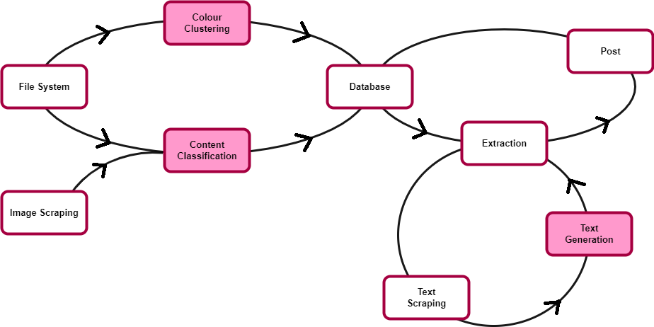

The goal of this project is to create aestehtically looking instagram posts. I lack artistic talent but I compensate this by setting up a machine learning pipeline to build an appealing instagram account. The are several factors... After successfully finding images similar in colour, it becomes obvious that not only colour but also the content of an image plays a role in how aesthetical we perceive a combination of images.  We will do this by splitting the process into several steps:
The goal of the image classification is to gain information on the content of the image to control in which group of posts it appears. For instance a picture of a tropical beach next to a snowy mountain hut seems clashing, even if the colour scheme was harmonic. Considering the fact that most of my pictures are travel and outdoor pics, the image classification model will fit on the following classes: palmtrees, snow and neither of those. This is a first order approximation but sufficient for now. The data are cleanly separable as well, palmeras en la nieve have not been in the spotlight of my camera yet.
Taking my set of favourite pictures, only around 10% contain palmtrees and 5% fit the content "winter paradise". To avoid imbalanced training data, I scrape and clean the top palmtree images from my favourite photo sharing social media platform. Finding images which fit my definition of winter paradise was a bit less trivial and required more cleaning afterwards. The winter pictures I usually take are mountain or forest photos. Hence I scraped images with the hashtags snowboarding, backcountriskiing, winterwald and snowshoeing. The final dataset consisted of roughly 2000 images, 25% of which contained palmtrees, 25% in the winter wonderland category and the remaining 50% fell into neither class.
It turned out that a non-negligible part of scraped palmtree images contained white frames. Considering that the competing category was snow-dominated, those had to be cropped off.
A set of 2000 images with quite non-uniform content is too small to reach a great accuracy on a fresh model. The achieved accuracy on the validation set of a model with two - three convolutional layers was around 70-75%. Which is not totally bad but taking a pre-trained network will do better. Indeed, a pre-trained (on the imagenet dataset) MobileNetV2 reached an accuracy between 88-90%. Closer inspection also showed that a misclassification between palmtree and winter wonderland images basically never happened.
This step is equivalent to the first part of this project. The five dominant colours per image are calculated with KMediods on CIELAB-colour space and the information is written to the database.